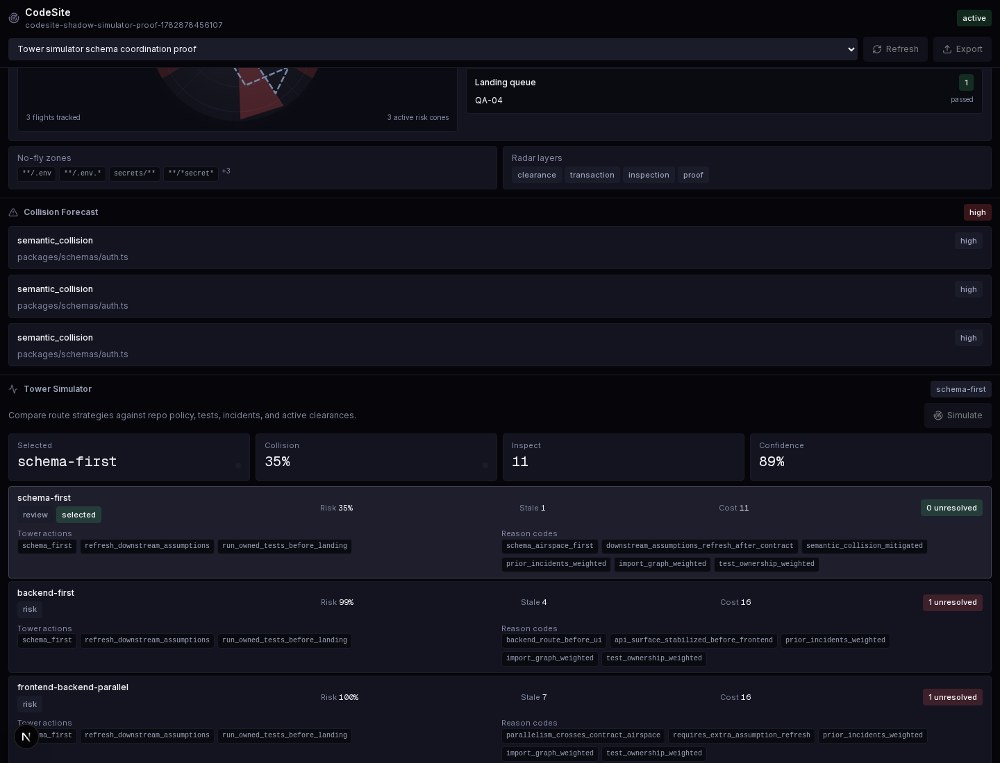
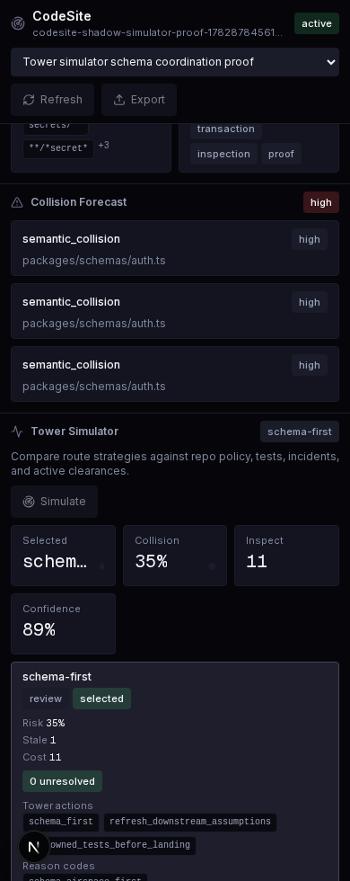

CodeSite Tower Simulator Proof
Live Docker workflow using real CodeSite projects, repo policy signals, incidents, inspection history, API simulations, and actual browser captures of the Tower Simulator UI.
Workspace
codesite-shadow-simulator-proof-1782878456107
Schema selected
schema-first
Migration selected
single-fullstack-agent
UI captures
desktop, mobile
Schema Coordination Universes
| Strategy | Result | Risk | Cost | Unresolved |
|---|---|---|---|---|
| schema-first | review | 35% | 11 | none |
| backend-first | risk | 99% | 16 | semantic_collision |
| frontend-backend-parallel | risk | 100% | 16 | semantic_collision |
| single-fullstack-agent | review | 46% | 17 | none |
| test-first | risk | 64% | 15 | none |
Migration Runway Universes
| Strategy | Result | Risk | Cost | Tower actions |
|---|---|---|---|---|
| schema-first | review | 28% | 10 | single_migration_runway_lock, refresh_downstream_assumptions, run_owned_tests_before_landing |
| backend-first | review | 40% | 12 | single_migration_runway_lock, refresh_downstream_assumptions, run_owned_tests_before_landing |
| frontend-backend-parallel | review | 54% | 13 | single_migration_runway_lock, refresh_downstream_assumptions, run_owned_tests_before_landing |
| single-fullstack-agent | passed | 13% | 13 | single_migration_runway_lock, refresh_downstream_assumptions, run_owned_tests_before_landing |
| test-first | passed | 18% | 11 | single_migration_runway_lock, refresh_downstream_assumptions, run_owned_tests_before_landing |
{
"schemaSelected": true,
"schemaAvoidsSemanticCollision": true,
"parallelLeavesSemanticCollision": true,
"aliasesNormalized": true,
"repoSignalsUsed": true,
"counterfactualPersisted": true,
"shadowAndArbiterEventsPersisted": true,
"evidenceRefsPortable": true,
"migrationSelectedSingleRunway": true,
"migrationLockActionVisible": true,
"migrationSchemaUnresolved": true,
"desktopUiProved": true,
"mobileUiProved": true
}desktop UI Capture

mobile UI Capture
